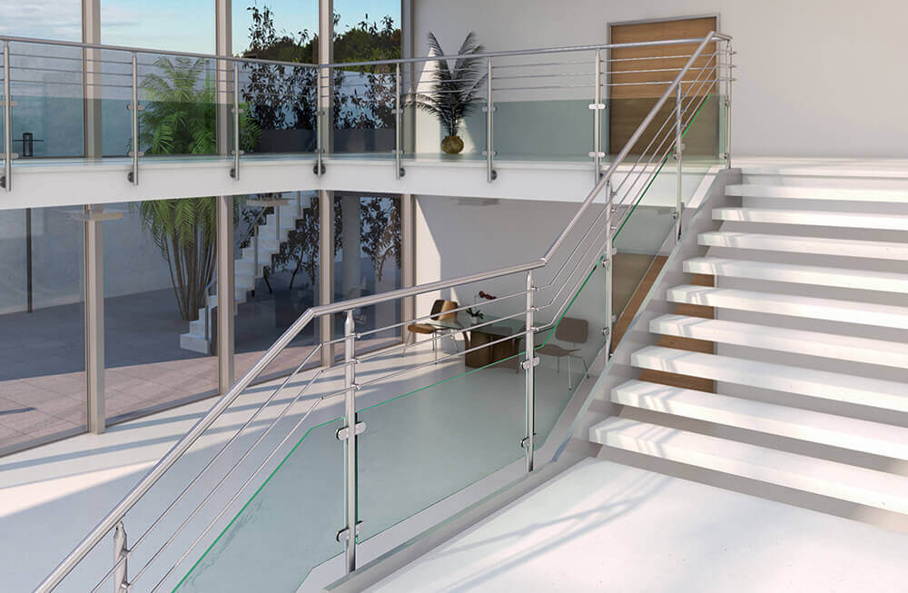

Accesso immediato
Nessuna registrazione, nessun sistema complicato. I cataloghi sono disponibili subito, pronti per essere consultati e scaricati.
Cataloghi pronti, contatto immediato, informazioni chiare. Tutto quello che serve, senza complicazioni.
Tutto Vetro si presenta online con un’impostazione pulita, sobria e centrata sul cliente. Il messaggio è chiaro: cataloghi pronti da consultare, contatto immediato e informazioni essenziali già disponibili.
Approfondisci
Riduciamo al minimo i passaggi inutili: accesso diretto ai cataloghi, contatto immediato e informazioni chiare.
Nessuna registrazione, nessun sistema complicato. I cataloghi sono disponibili subito, pronti per essere consultati e scaricati.
Parli direttamente con noi via telefono o email. Niente form, niente attese inutili.
Contenuti e struttura pensati per chi lavora in vetreria ogni giorno, non per fare scena.
Catalogo 1 e Catalogo 2 sono raccolti in una sezione dedicata con pulsanti di visualizzazione e download. La struttura è semplice e pronta per essere aggiornata in futuro con nuovi PDF.
Vai ai cataloghiVersione scaricabile e consultabile online.
Versione scaricabile e consultabile online.
Contattaci direttamente via email o telefono. Il sito è stato strutturato per rendere il contatto immediato e senza passaggi inutili.